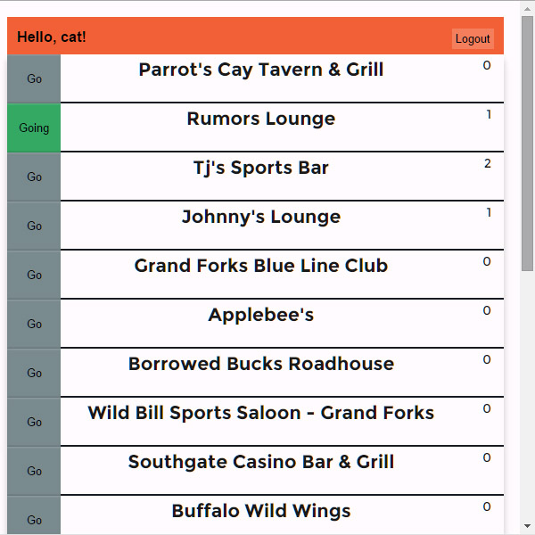
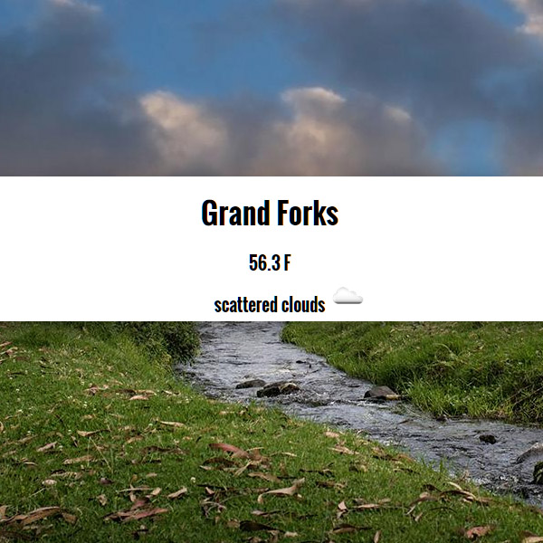
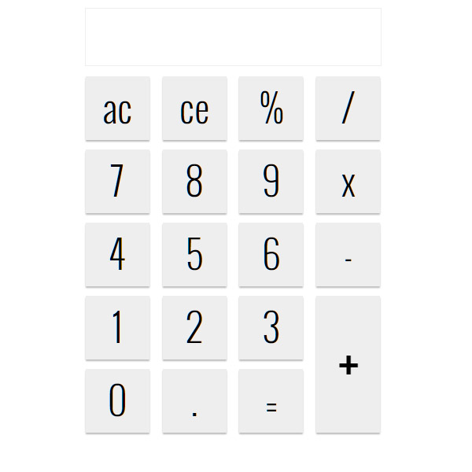
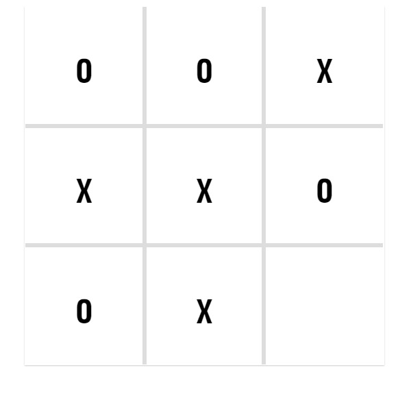
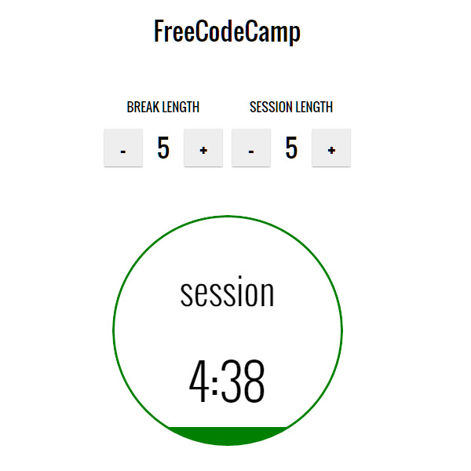

Projects
Click on a project title or image to view the end result.
Nightlife Management App
In this project a "nightlife-coordination" app was reverse engineered. Check out the details of the prompt here.
View the source here.
This app shows any user the bars nearby based on HTML5 geolocation and the number of authenticated users saying they will attend each venue. Authenticated users get an additional button next to each bar allowing them to indicate to the app that they will be attending.
Objectives
The primary purpose for this project was to refine back-end skills learned in the previous project and to add a few new pieces of technology to my skill set.
-
Based on my observations from the last project, the voting app, I made sure to thoroughly separate the client and server sides of the application. The initial api was developed entirely before any client side work was done.
-
Encryption to protect passwords in the database with Bcrypt was added. So a new technology was learned. But more importantly, because of encryption's asynchronous nature, I found the need to abandon "console.log()" debugging almost entirely because it ends up being ineffective. Debuggers really aren't that complicated and it only took the reading of an article or two to get into them correctly. No longer will I look over my shoulder as I type multitudes of print statements while hoping nobody is watching.
-
Another thing learned from adding encryption is that levels of callbacks can pile up fast. Encryption was just another of those levels which happened to hit the tipping point of making code difficult to reason about. Any further nesting of callbacks would have warranted a refactor. So, I have been reading up on some asynchronous libraries and look forward to using async.js in the future.
-
This was also my first project to use angular. As others have said, it was certainly very easy to start using. There was some difficulty learning that $scope.$apply() had to surround functions in an ajax call. It felt a little silly doing this because it creates triply nested functions in ones ajax where only the deepest function has any expressions. Async.js will end up being very helpful in these situations.
-
I ended up needing SASS finally. Previously I avoided any libraries that were just crutches for myself as a new developer. But this time I had a situation where I was using one base color and many slight variations in shade and tint for making elements look like buttons and tabs or just making the page feel "active" with different styling on mouseovers. I knew that if I ever wanted to change the base color all of these color variations would have to be remade and switched out in all of their varying locations. So before I got too far into styling I switched everything out for SASS. Now using variables and SASS's lighten() and darken() I can change the entire color scheme by modifying a single variable.
-
Using SASS effectively really requires a task runner. Now I use gulp. Since I'm using gulp now I also minify and uglify all of my resources which should add efficiency and speed to deployed apps once I make something large, or just long, enough for that to matter.
-
With this new structure I saw how testing could be done much easier and so some experimentation was done with Mocha. However, I had trouble getting the tests to work because I didn't know if I had set up mocha incorrectly or if it was my api. Unfortunately I ended up making a manual testing page with all the user forms in one spot. But, I did get Mocha working before the end of the project and the one test I did write caught an obvious bug right away. So maybe my lack of testing so far has been a weakness, but I have a reference now that I wrote myself and can look back on for getting testing working at the start of projects in the future.
Weaknesses
-
This project could have been improved by putting more effort into planning. The layout of the page is fairly simple so I thought it would be fine to do the styling out of a vague idea I had in my head for what I wanted. But, ultimately I was unhappy with the way the design turned out and a mock-up or two could have fixed that.
-
Another thing planning could have accomplished is a cleaner api. If I would have known that any successful POST to register a new user would result in an immediate POST to login then I could have provided an option to do both at once. After getting everything working in the client side and server side I went back to add encryption to the database. This additional async code in the register function doesn't allow users to immediately login. Looking back at the code now I see exactly what I would have to do to fix this. However, at the time I was struggling to get my first deployment to Heroku working and quickly changed my Angular code to direct the user to log in after registering. This added a delay at the cost of convenience to the user. Definitely a weakness.
Voting App
The goal of this project was to build an app that reverse engineered this other poll application. This was an assignment from FreeCodeCamp and the details can be found here.
View my GitHub repo here.
This app let's a user login to create and vote on polls. Any user can visit the page of a user with an account to view their polls but must login to vote or create their own.
Objectives
The primary objective of this project was to serve as an introduction to back-end development
Technology Learned
-
Express
This was my first time using Express, a web framework for Node.js. Like most things in javascript, Express is very open and unopinionated which exposes what is happening to its user at a very deep level. Even though this philosophy tends to cause steeper learning curves, I'm very happy that I worked through it and can understand why Express is one of the most popular Node.js frameworks.
-
MongoDB
In this project I used Mongoose along with MongoDB for my data storage . These two pieces of software made it extremely simple to create a schema and just use it. Other than ease of use, using these two caused me to become familiar with the error first callback design pattern and async programming in general.
-
Authentication and Authorization
User handling was done with Passport and Express-Sessions. It may have actually been easier to just roll my own authentication as Passport seemed to hide the inner workings of authentication. However, I'm writing this from the future where I have worked with it more. I now know that it is really just an authentication time saver and allows for multiple authentication strategies without causing the mess that one would create on their own. Express-Sessions is just a middleware that stays out of the way while letting one access user data from any request, very useful.
Weaknesses
This app was structured very poorly and I really disliked working in it after realizing everything I had done wrong. It was my first time working with Jade templates and decided it might be a good idea to have route handlers render out html with poll and user data already in them using my new templating powers. This caused problems when I wanted to make the client side dynamic and resulted in much DOM wrangling. I finished this one up quickly and did almost no styling on it, wanting to get away from the mess and hoping to use my new Express skills for good in the future.
Weather Lookup Page
Check out the project prompt here.
View my GitHub repo here.
The purpose of this project was to create a front-end application that would use an api and geolocation to check the local weather. The images used on the page change based on the temperature and sky conditions.
Objectives
This project was intended to serve as an introduction to geolocation and public APIs. I didn't spend enough time on this project or put in enough effort so check out the weaknesses section for things learned!
Weaknesses
This project was added just as I was about to finish the last front-end challenge in the set at FreeCodeCamp. This was supposed to be one of the first an FCC user would complete but I was almost ready to move on to full-stack. Because of this I rushed through it and did some things wrongly without realizing it. Thankfully, by doing this writeup I can identify those things and still learn from a project I didn't put enough effort into.
-
First of all, I wasn't sure what all of the possible forecast description phrases were so I didn't implement all of the possible sky images. Now looking back I realize I can just go check the API documentation and see every possibility. A lesson in checking the docs!
-
Second, I used Imgur for image hosting. After reading their TOS I can see that they aren't okay with this. I'll have to go back and fix that if I want to keep the page deployed.
-
The last major thing that sticks out is the way I vertically aligned that div in the center of the screen. It was supposed to cover the seam between the two background images but my poor CSS skills made it aligned too high up on large monitors. I did a top: 30% thinking it would approximately center it and be good enough. This approach isn't really acceptable if the aim is to work well on all devices. I should have looked for a better way (like top: calc(50% - 5em) ).
JavaScript Calculator
Check out the prompt for the project here.
View the GitHub repo here
The aim of this project was to build a simple calculator in JavaScript.
Objectives
The goal here was to focus on writing good JavaScript and not to have to think about new technology. This was certainly accomplished. The implementation was very straightforward and I was really surprised that it just worked right away once I had finished. I used the concept of registers (thanks, EE education) to remember inputs the way an actual calculator would and wrote operator functions before I even started looking at how they would apply to the view. The view and controller sides were made independently, hooked up, and everything just worked.
Weaknesses
As I was working on this project I noticed I was repeating myself a bit too much when applying event handlers to calculator buttons. I decided that I would make that trade-off because the project was so short, sacrificing long term efficiency for getting it done quickly. Looking back now I can see an easy way too combine the 0-9 input buttons which would have kept this program DRY. If I would have pursued the DRY option I would have learned more about JQuery sooner even though it might have taken longer to complete the project. I think the lesson here is to not make trade-offs in the quality of code when you are trying to learn.
TicTacToe Game
Check out the project prompt here.
View my GitHub repo here.
This project involved making a simple TicTacToe game with an AI.
Objectives
The primary goal here was to get practice in JavaScript through writing game logic and the AI to go with it. I did end up becoming more comfortable with JS and also picked up a few tricks for data handling.
Weaknesses
This project could have been made easier with Angular. The game logic has to worry about the state of the view, which doesn't separate concerns and made the code harder to reason through. Another thing I notice looking back is that my comments aren't sufficient. I'll have to improve that in the future.
Pomodoro Clock
Check out the project prompt here.
View my GitHub repo here.
In this project a Pomodoro clock was made. This is a timer for the "Pomodoro Technique" in which one works for a set time, then takes a break for a set time before going back t work. So in this project a two state timer was built where the state alternates when the timer reaches zero.
Objectives
The purpose of this project was to improve JavaScript skills in general, but especially around asynchronous concepts and user interfaces. I'm really happy with the way both of those objectives were accomplished. All of the asynchronous events that happen from user interaction seem to behave exactly how I wanted them to, and the clock looks good as far as I know from my up to date version of chrome.
Weaknesses
One thing I was still doing wrong in this project was using divs for buttons. The buttons look nice but I know now that behaviors really shouldn't be forced upon elements that weren't made for them. I could just as easily use actual buttons and style them the same way now that I know more CSS.